语法检查器
检查器的语法标签页显示当前文档的全部语法分析结果。这个标签页分为七个分面。多数分面关注你所选的词或句子的语法特征，有两个分面着眼于整个文档。在计数、查询或编码之前，可以先用这个标签页查看一段文字的结构。
这个标签页中的所有内容，都来自 LemmaLoom 为文档建立索引时自动进行的语法分析（见第 21 章“分析与索引”）。语法分析偶尔会出错，分析口语转写稿时尤其如此。拿不准的时候，最好去读一读那段文字本身。
关键术语
各个分面使用语法分析中的以下术语：
- 词符是语法分析的单位。因此英语的 couldn't 算作 could 和 n't 两个词符，句末的句号也单独算一个词符。词符既可以是词，也可以是标点符号。
- 每个词都有一个词典形式，称为词元。例如，leaders 的词元是 leader，was 的词元是 be。
- 一个词的词类是它所属的大类，如名词和动词。标记是更细的分类，例如英语的标记
NNS表示复数名词。标记来自各语言各自的标记集。 - 句子中的每个词都依附于另一个词，那个词称为它的中心词。例如在“独立委员会”中，“独立”依附于“委员会”，所以“委员会”是“独立”的中心词。只有一个词不依附于任何词，它通常是主要动词，称为句子的根节点。
- 依存关系用带代码的关系说明一个词与中心词之间的联系，如
nsubj（名词性主语）和amod（形容词修饰语）。LemmaLoom 把众多关系归为十种功能，如主语、宾语和状语。这些功能就是语法功能透镜的标注项，详见第 6 章“透镜”中的语法功能。 - 状语说明某件事发生的时间、地点、方式或原因，如“今年夏天”和“在门前的台阶上”。
- 短语是一组结合在一起的词，如名词短语“一个更热的世界”和介词短语“在讲台上”。短语层层嵌套，最外层是整个句子。常见的标记有
NP（名词短语）、PP（介词短语）、VP（动词短语）等。 - 小句是以自己的动词为核心的一组词，如“她的公寓已经热成了蒸笼”。一个句子中可以有多个小句。
需要弄清代码的含义时，可以查看帮助 ▸ 术语表。它按语言列出所有标记、关系和短语标记，分别在词性标记、依存关系和短语标记部分。
分面
各个分面以一排按钮的形式显示在检查器的标签页图标下方。
| 分面 | 作用对象 | 显示内容 |
|---|---|---|
| 语法 | 所选的词 | 它的词元、词类、标记、功能、中心词和语法特征，以及它在文档中的其他用例 |
| 句子 | 所选的句子 | 句子编号、句型（仅限英语）、长度、根节点和短语 |
| 结构 | 所选的句子 | 三种图示，分别显示主句的组成部分、词与词之间的联系，以及短语 |
| 形式 × 功能 | 整个文档 | 每一类短语承担每种语法功能的次数 |
| 搭配词 | 所选的词，在整个文档范围内 | 在它附近出现得格外频繁的词 |
| 词汇速写 | 所选的词，在整个文档范围内 | 它的语法搭配成分，按关系分组 |
| 语篇 | 整个文档 | 句子如何与前文衔接、作者用来评说自身文本的词语，以及修辞手法 |
所选的句子是指你点按的词所在的句子，或所选文字的第一个句子。在你选择内容之前，语法和搭配词显示请选择一个词，句子和结构显示请选择一个句子，词汇速写显示速写一个词。
词汇速写分面为你在阅读器中选中的词生成速写。要速写另一个词，在词栏中输入它，然后按下 Return 键。后退和前进按钮可以回到之前生成的速写。图谱、列表和网状图决定速写的呈现形式。导出按钮用于存储当前的速写。在窗口中打开会在词汇速写窗口中打开这份速写。更多内容见第 12 章“词汇速写”。
打开语法标签页
“气候辩论”中的每个文档都已建立索引（见第 1 章“简介”中的示例项目），所以你可以直接分析它们的语法。本章的示例大多取自评论文章“时间不多了”。你自己的文档在索引完成后才有语法信息；在此之前，标签页显示索引完成后即可查看语法信息。
要查看一个文档的语法：
- 在阅读器中打开这个文档。
- 选取显示 ▸ 检查器 ▸ 语法（⌥⌘2），或点按检查器顶部的第二个图标，即一行间隔开的词。如果检查器处于隐藏状态，这个菜单命令也会把它显示出来。
- 点按一个分面。
- 在阅读器中点按一个词，或选择一段文字。
分面会随阅读器中的选择而更新。在分面中选择一个词、短语或句子，也会在阅读器中选中它，并滚动到那里。
每个文档都会记住你上次选择的分面。分屏浏览时，检查器描述当前窗格中的文档；点按另一个窗格后，检查器会在同一个分面中显示那个文档的语法（见第 9 章“译文与分屏浏览”）。
支持的语言
文档可以按英语、德语和中文建立索引。如果你添加的是其他语言的文档，语法标签页会一直显示索引完成后即可查看语法信息。译文文档按自己的语言建立索引，所以“时间不多了 (英语)”得到的是英语的语法分析。
各个分面适用于每种语言，只有细微的差别。句子只在英语文档中显示句型。在语篇中，德语文档的元话语下多一个类别情态小品词；中文文档的元话语下多一个语气助词，衔接下多一个零形回指。有两种修辞手法只在部分语言中查找（见本章后文的修辞）。
每种语言有各自的标记集，分面使用相应语言标记集中的标记。英语文档使用宾州树库标记（如 NNS 和 VBD），德语使用斯图加特-图宾根标记（NN 和 VVFIN），中文使用宾州中文树库标记（NN 和 VV）。词类、功能和短语类型在各语言之间保持一致，所以它们的颜色在任何语言中都表示同样的意思。
语法分面
语法分面描述单个词。它说明这个词是什么、在句中起什么作用、依附于哪个词，以及在文档中还出现在哪里。例如，在围绕某个词构建查询之前，可以先用这个分面核实 LemmaLoom 是怎样分析这个词的。
下图是“时间不多了”中“我们的领导人用一串日期来回应这些警告。”一句里“领导人”一词的语法分面。
从上到下依次显示以下内容：
- 词在文本中的样子，以及它的词类，这里是名词，颜色与词类透镜中的相同。
- 词元。只有词元与词本身不同时才显示这一行，例如英语的 leaders 显示 leader。“领导人”的词元与词本身相同，所以这里没有这一行。
- 词类，这里显示名词 · NOUN，即词类的名称，以及它在三种语言共用的通用体系中的代码。
- 标记，这里显示普通名词 · NN。标记是这个词在所属语言标记集中的细分标记。
- 句法功能显示这个词与中心词的关系，这里是名词性主语 · nsubj，并以相应功能的颜色显示它的语法功能主语。下面一行用文字重述这层关系，即“回应” (动词) 的主语。关于功能的更多内容（包括全部十种功能），见第 6 章“透镜”中的语法功能。对于同一句中的“警告”，这一行显示“回应” (动词) 的宾语。对于“我们”，则显示修饰 “领导人” (名词)；起形容词的作用。不属于十种功能中任何一种的关系（如句号的
punct）没有带颜色的功能，下面一行显示“回应” (动词) 的 标点符号。 - 中心词以链接的形式给出这个词的中心词“回应”，后面是它的词类。借助它，你可以在句子中逐级往上，一直走到根节点。点按“回应”，分面就改为描述“回应”。它的句法功能一行显示句子的根节点 · ROOT，表明这是根节点；中心词一行显示句子的根节点；句法功能下面那一行显示本句的根节点。
- 形态描述词的语法特征。在英文译本“时间不多了 (英语)”的句子 Our leaders responded to these warnings with a string of dates. 中，leaders 显示语法数 复数，responded 显示时态 过去时和动词形式 限定式；德语名词则可能显示格、数和性。只有具有形态特征的词才显示形态部分。中文的词不因时态或数而改变形式，所以中文词不显示这一部分。
- 本文档中的其他用例列出词元相同的词在文档中出现的其他位置。
词的其他用例
本文档中的其他用例部分最多显示这个词元的另外 12 个出现位置。每一条显示这个词在该处的写法、词类和在句中的作用（如名词 · 宾语），以及它所在的句子。点按一条，即可在阅读器中选中相应的出现位置。
词类或功能不同的条目排在其他条目前面；每组之内按在文档中出现的先后排列。第一组条目带有两个相互交叉的箭头，将鼠标指针悬停在箭头上会显示不同的形式或功能。这表示这个词在两处出现时，形式或功能（或两者）有所不同。
例如在“时间不多了”中，“担心”在“虽然这种担心可以理解”中是名词，在“有些读者可能会担心，气候政策最终会最沉重地压在本已艰难的家庭身上”中是动词。选中名词用法的“担心”，另一个句子就会带着箭头排在列表最前面，因为“担心”在那里的词类不同。一个名词在一句中作主语、在另一句中作宾语，也会带上箭头。所以，箭头标出的是可能伴随意义变化的语法差别。打算统计或编码某个词时，可以用这个列表确认它在整个文档中的用法是否一致。
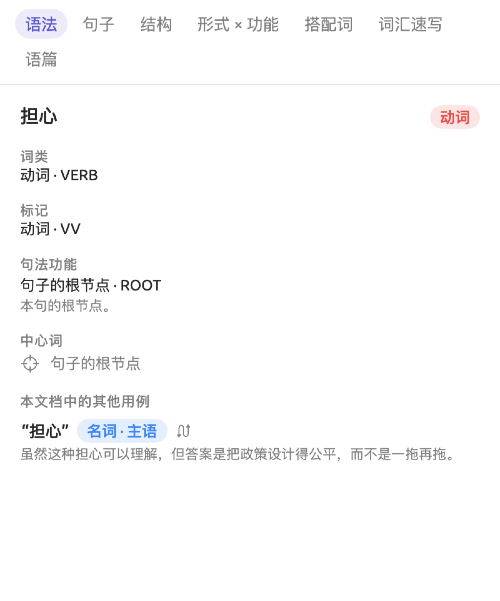
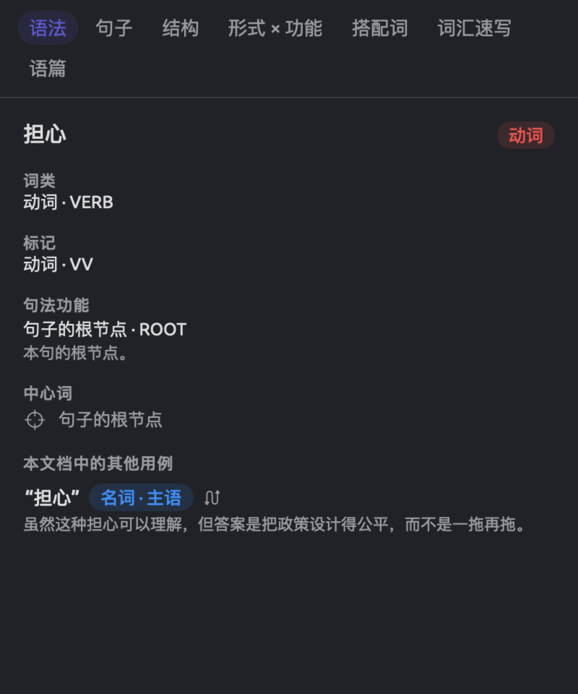
选择一段文字
如果你选择的是一段文字而不是一个词，分面描述的是这段文字的核心词，也就是这段文字中第一个中心词位于所选范围之外的词。选择“这些警告”，描述的是“警告”；选择“用一串日期来回应这些警告”，描述的是“回应”。
句子分面
句子分面简要描述当前所选的句子。它告诉你句子的结构（句型）、长度以及其中的所有短语。
分面首先给出所选句子从文档开头算起的编号，如第 17 句。如果所选内容跨越多个句子，还会有一行注明，如所选内容跨 3 个句子，然后只描述其中的第一个句子。
句子编号下面依次是：
- 英语文档的句型，用一个简洁的公式表示（如 S · V · DO），后面是句型的名称（如及物）和一段说明（见下文的句型）。
- 词数，即句中的词符数。标点符号也计算在内，所以“我们的领导人用一串日期来回应这些警告。”有 12 个词符。
- 根节点，即句子的根节点词，以链接显示。点按这个词即可在阅读器中选中它。
- 短语，即语法分析在句中找到的每一个短语，从整个句子一直到由单个词构成的短语。
短语标题下的每一行依次显示短语的标记（如 NP，按短语类型着色）、短语类型（如名词短语）和它包含的词。各行按在句中出现的顺序排列；从同一个词开始的短语，按长度从长到短排列。点按一行，即可在阅读器中选中相应的短语。选中一个词时，包含这个词的所有短语所在的行都会加上底色。
句型
英语的小句结构可以按照主要动词需要什么（什么都不需要、一个宾语、两个宾语、一个描述主语的成分，等等）分为几种基本句型。句子分面把每个英语句子归入十种句型中的一种。
| 句型 | 公式 | 例句 |
|---|---|---|
| 不及物 | S · V | Two students fainted. |
| 及物 | S · V · DO | We do not need another report. |
| 双及物 | S · V · IO · DO | The mayor gave every school a heat plan. |
| 复杂及物 | S · V · DO · OC | The drought left the fields bare. |
| 系动 | S · LV · SC | We feel frightened. |
| “Be” + 补语 | S · be · SC | None of this is radical. |
| “Be” + 状语 | S · be · ADV | The cooling center is in the library. |
| 祈使式 | (You) · V | Come to the farm gate. |
| 疑问句 | ? | What exactly are we waiting for? |
| 句子片段 | 一条短横 | Net zero by 2050. |
公式中，S 表示主语，V 表示动词，DO 表示直接宾语，IO 表示间接宾语。SC 表示主语补语，即描述主语的名词或形容词。OC 表示宾语补语，即描述宾语的成分。LV 表示系动词，ADV 表示状语。定义见帮助 ▸ 术语表中的缩写与符号。
LemmaLoom 按以下顺序检验各种句型，显示第一个符合的句型：
- 以问号结尾的句子，或语法分析判定为疑问句的句子，是疑问句。
- 根节点不是动词的句子是句子片段；但如果短语分析在其中找到一个小句（标记如
S或SBAR），它就是不及物。分析找不到根节点的句子也是句子片段。 - 主要动词为原形且没有主语的句子是祈使式。be 不参与这项检验，所以 Be careful 算作“Be” + 补语（第 4 条）。
- 主要动词是 be 时，如果后面有描述主语的名词或形容词，句子就是“Be” + 补语；否则是“Be” + 状语，如 She was on her front step until three。
- 系动词后面接补语，句子就是系动。算作系动词的有 seem、become、appear、feel、look、taste、smell、sound、remain、prove、stay、grow、turn、get 和 go。
- 有直接宾语和宾语补语的，是复杂及物。
- 有间接宾语和直接宾语的，是双及物。
- 只有直接宾语的，是及物。
- 其余的都是不及物。
句型可以提示作者描述事件时采用的框架。例如 We block the roads 是及物，作者对某个事物采取行动；We feel frightened 则是系动，描述的是一种状态。
句型只针对主句。例如在 I think we need a plan 中，主要动词 think 后面跟的是一个小句而不是宾语，所以尽管小句中的 need 带有宾语，这个句子仍归为不及物。因此在专栏文章和辩论中，以 I think 开头的句子大多是不及物。分析读错了句子时，句型也会反映这种误读，而结构分面会显示分析是怎样读这个句子的。
结构分面
结构分面用上下排列的三种图示显示所选的句子，标题分别是结构剖析、依存图和成分树。在这些图示中选择任何元素，都会在阅读器中选中它。
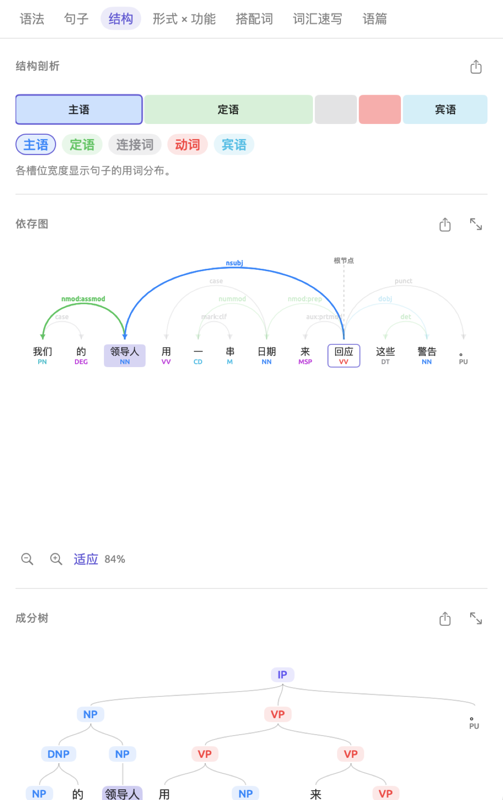
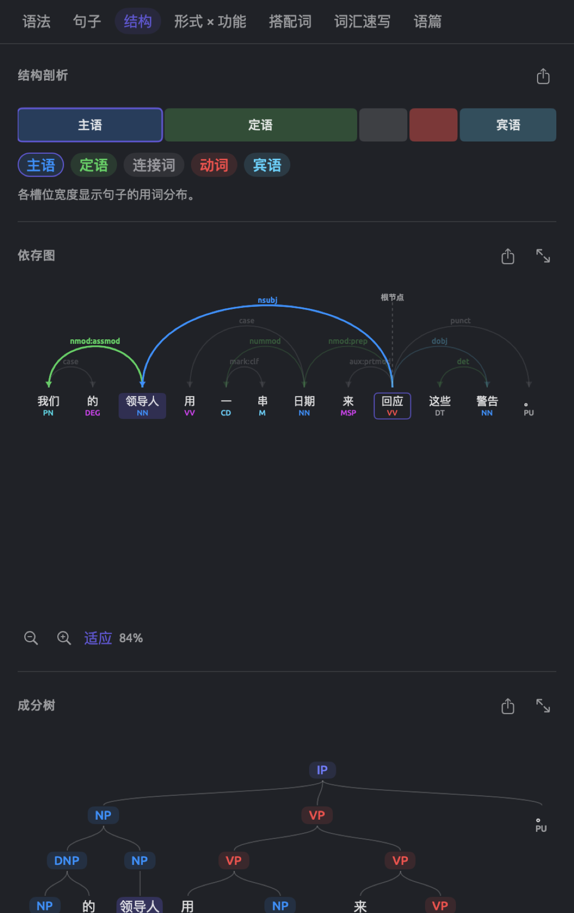
结构剖析
结构剖析条形图把句子分成主句的各个组成部分。其中一个槽是动词槽，装的是主要动词，以及属于它的助动词和否定词（如英语的 not）。其余每个槽各装一个直接依附于主要动词的成分，连同属于这个成分的全部词；这个成分可以是主语、宾语或状语。
每个槽以它的功能命名，并使用该功能的颜色。无法归入任何功能的部分显示为灰色，以它的关系命名。动词槽的颜色比其他槽深。
每个槽的宽度与它包含的词符数成正比。例如“我们的领导人用一串日期来回应这些警告。”的条形图有五个槽，分别是主语“我们的领导人”（3 个词符）、表示方式的“用一串日期”（4 个）、“来”（1 个）、动词“回应”（1 个）和宾语“这些警告”（2 个）。词符太少的槽会画得稍宽一些，以免看不清。
条形图下方，每个槽都有一个对应的按钮。按钮显示槽的名称和颜色。点按任何一个槽按钮，都会在阅读器中选中其中的词；直接点按条形图中的槽，效果相同。
在德语句子的语法分析中，句子的根节点是限定动词（随主语变化的那个动词形式），而不是主要动词。因此在 Die Wissenschaft hat ihre Arbeit eindeutig getan 中，动词槽装的是限定动词 hat，而分词 getan（“做了”）连同依附于它的词构成另一个槽，名为补语，即 ihre Arbeit eindeutig getan。
依存图
依存图以图形方式显示句中每个词的中心词。各个词按句中的顺序排在一条水平线上，每个词下方是它的标记，按词类着色。弧线把每个词与它的中心词连起来，箭头指向依存的那个词，弧线上方显示关系代码，按功能着色。最后，一条虚线把根节点词连到上方的根节点。
在例句中，从“回应”出发的弧线有五条，分别是 nsubj（“领导人”）、nmod:prep（“日期”）、aux:prtmod（“来”）、dobj（“警告”）和 punct（句号）。“我们”以 nmod:assmod 修饰“领导人”，“这些”以 det 修饰“警告”；“用”以 case 依附于“日期”。
短弧线画得较低。一条弧线跨过另一条弧线时，会画得更高，由此可以看出句子结构嵌套得有多深。将鼠标指针悬停在关系代码和标记上，会显示它们的全称，例如 nsubj 显示名词性主语，NN 显示普通名词。德语也有自己的关系代码，例如 sb 表示主语，oa 表示宾格宾语。中文沿用了英语的大部分关系代码，另有一些补充，如表示话题的 nmod:topic。
点按任何词即可选中它。选中的词加上底色，它的中心词加上轮廓。从选中的词出发或指向它的所有弧线都会加粗，其余弧线变淡。
如果你对某些句子结构的解读有疑问，就该查看依存图。“时间不多了”中有“最先夺走老人、病人和穷人性命的高温”这样一个短语。其中的“老人、病人和穷人性命”可以理解为老人、病人和穷人三者的性命（“老人”“病人”与“穷人”并列，一起修饰“性命”），也可以理解为“老人”“病人”与“穷人性命”三项并列。找到箭头指向“老人”的那条弧线。它的另一端如果是“穷人”，说明分析选择了前一种读法；如果是“性命”，说明分析选择了后一种。这里一旦判断错误，就会影响到语法功能透镜、句型、形式 × 功能和词汇速写。
成分树
成分树显示各个词怎样组合成短语。最顶层是整个句子，通常标为 S，中文中通常标为 IP。每个短语向下分为更小的组成短语和其中的单个词。每个词（连同它的词性标记）挂在它所属的最小短语下面，因此嵌套较深的短语中的词，位置比嵌套较浅的短语中的词低。每种短语类型都按短语透镜的配色方案着色（见第 6 章“透镜”中的短语），小句有自己的颜色。
在例句中，成分树把句子 IP 分为名词短语“我们的领导人”和动词短语“用一串日期来回应这些警告”。这个动词短语又分为两个动词短语：“用一串日期”包含名词短语“一串日期”，“来回应这些警告”包含动词短语“回应这些警告”，其中又有名词短语“这些警告”。你看到的分解可能与这里描述的有所不同。
将鼠标指针悬停在标记上，可以看到短语的全称，例如 PP 显示介词短语，英语中的 SBAR 显示从句。点按标记或词节点，即可在阅读器中选中相应的短语或词。如果语法分析把一个句子分成几个部分，成分树会把它们全部放在一个更高层的 S 标记之下。
标记因语言而异。英语使用宾州树库的标记，如 NP、VP、PP 和 SBAR。德语用 AP 和 AVP 分别表示形容词短语和副词短语。中文的标记遵循宾州中文树库的惯例，用 IP 表示小句，用 DNP 表示带“的”的短语。
缩放与滚动
依存图和成分树最初按检查器的宽度缩放显示，最大为实际大小，所以长句一开始会显得很小。结构剖析条形图始终与检查器同宽。依存图和成分树下方各有一个缩放栏：
- 缩小和放大是带减号和加号的放大镜，每点按一次，图示就按 1.25 倍的比例缩小或放大，直到达到最小或最大限度。这时按钮已停用，悬停提示为已缩小至最小或已放大至最大。
- 适应按钮把图示重新缩放到检查器的宽度。
- 百分比显示图示的相对大小，范围始终在 25% 到 600% 之间。
除了点按按钮，你还可以在触控板上捏合来缩放；图示的内容超出检查器时，可以滚动查看。只要你还没有手动缩放过，改变检查器的宽度时，图示就会相应地重新缩放。选择另一个句子时，缩放比例保持不变；点按适应即可让新句子适应宽度。需要更大的空间时，可以使用图示窗口。
图示窗口
图示窗口以任意大小显示依存图或成分树，最大可占满整个屏幕。要打开它，请点按结构分面中依存图或成分树旁边的在窗口中打开（图标是两个斜向箭头）。
图示窗口打开后显示所选的图。左上角的依存和成分用于在两种图之间切换。右上角的两个箭头（上一句和下一句）用于在文档中逐句移动，旁边的文字显示你当前查看的是哪一句（如第 17 句，共 63 句）。
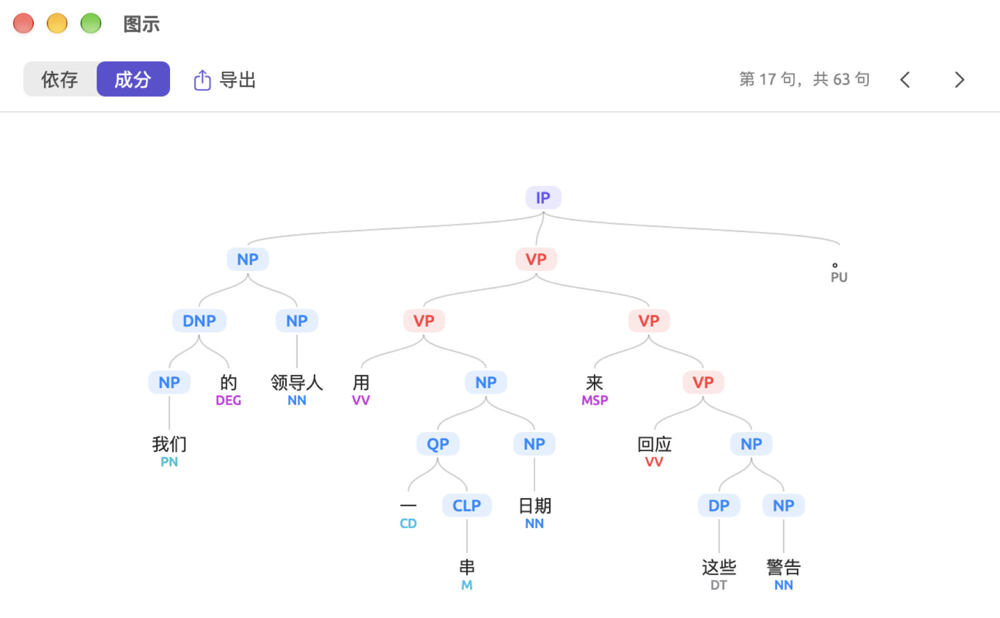
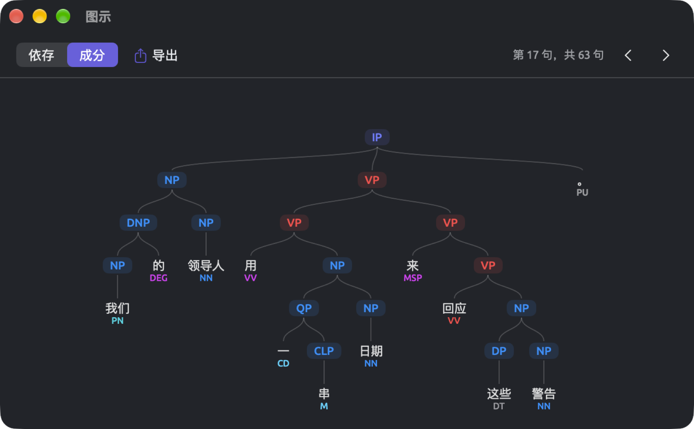
图示窗口始终显示当前文档中的所选句子。在阅读器中点按另一个句子里的任何词，图示窗口就会跟着变。点按箭头会选中下一句或上一句的根节点词，并让阅读器滚动到那里；到了第一句或最后一句，无法再继续的那个箭头已停用，悬停提示为已在最前或已在最后。在图示中点按一个词或短语，会在阅读器中选中它。
窗口打开时，图示会适应窗口大小，但不超过实际大小。图示窗口右下角有一个缩放栏，作用与检查器中的缩放栏类似，范围是 10% 到 800%。其中的适应让整个图示适应窗口。你还可以这样改变显示：
- 在触控板上捏合来缩放，或分别选取菜单命令显示 ▸ 放大（⌘+）和显示 ▸ 缩小（⌘-）。
- 选取显示 ▸ 实际大小（⌘0），按实际大小显示。
- 连按两次图示，或选取显示 ▸ 缩放以适应，让图示适应窗口。
- 拖动图示，或用两指滚动，在图示中移动。
逐句移动时，图示窗口保持当前的缩放比例和平移位置。连按两次或点按适应，即可让新载入的图示适应窗口。阅读器中没有选中任何句子时，图示窗口显示请选择一个句子。
导出图示
结构分面中的三个标题旁各有一个导出按钮，图标是一个带箭头的方框。在图示窗口中，导出菜单位于依存和成分旁边。
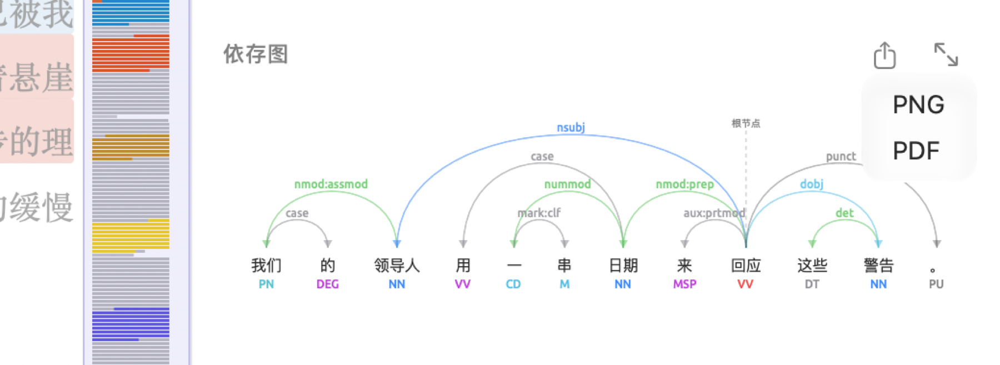
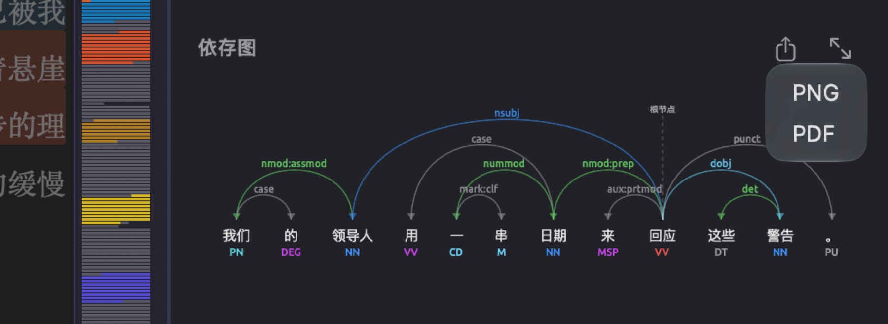
要导出图示：
- 点按导出按钮，然后选取 PNG 或 PDF。
- 在存储对话框中选择名称和位置。建议的名称包含图示类型和句子编号，例如依存图为
arcs-sentence-17，成分树为tree-sentence-17，结构剖析条形图为anatomy-sentence-17。 - 点按保存。
无论当前缩放比例如何，图示都按实际大小存储。结构剖析条形图导出时宽 640 点。PNG 是双倍分辨率的图像，足以用于幻灯片演示和文字处理文档。用于印刷时请选择 PDF，这种格式在任何尺寸下都很清晰。
PNG 和 PDF 都使用你所选的颜色主题来绘制，所以使用深色主题时，图示的背景也是深色的。如果需要白色背景的图示，请在导出之前，在设置的通用页面中把外观下的主题设为浅色（见第 24 章“设置与外观”）。
形式 × 功能分面
语法把短语的结构（术语称为形式）与它在句中的用途或作用（术语称为功能）区分开来。形式和功能彼此独立。下面的例子说明，同一种形式（名词短语）可以承担不同的功能：在“我们的领导人用一串日期来回应这些警告。”中，名词短语“我们的领导人”作主语，名词短语“这些警告”作宾语；在英语的 this summer the heat closed schools 中，名词短语 this summer 作状语。同样，一种功能也可以由不同的形式承担。例如在英语句子 She sat on her front step until three in the morning because her apartment had turned into an oven 中，状语 on her front step 是介词短语，状语 because her apartment had turned into an oven 则是一个小句。
形式 × 功能分面统计整个文档中每种形式承担每种功能的次数，并把结果排成一个矩阵。矩阵相当于一个文档的文体概貌，例如可以看出作者是倾向于把信息压缩进名词短语，还是用小句详细交代原因和条件（见本章后文的使用矩阵）。
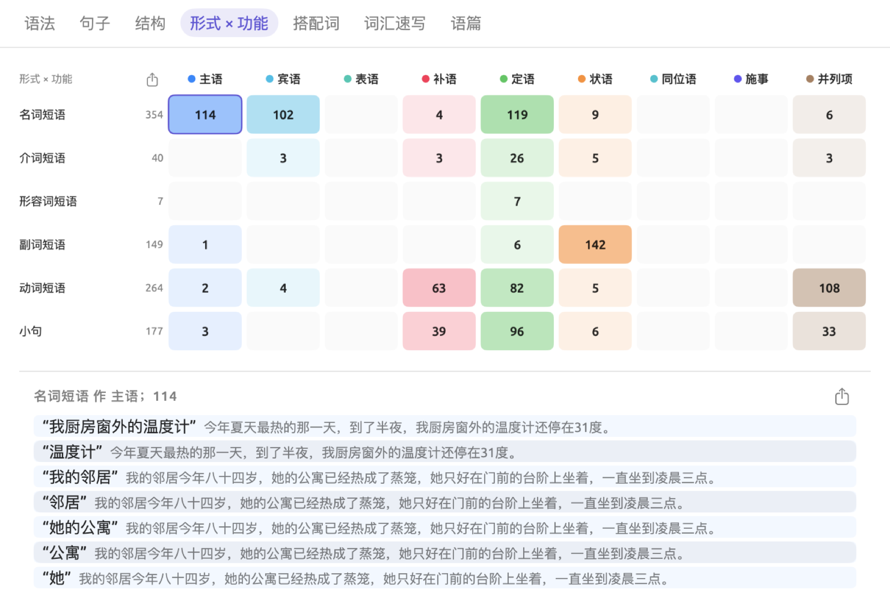
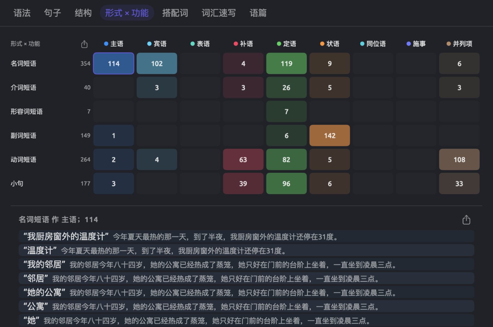
读懂矩阵
行是六种形式（名词短语、介词短语、形容词短语、副词短语、动词短语和小句）。只有当文档中有这种形式的短语被计入时，才显示这一行。每行名称右边是这一行所有数字的合计。
列是各种功能（主语、宾语、表语、补语、定语、状语、同位语、施事和并列项），即语法功能透镜十种语法功能中的九种。第 6 章“透镜”中的语法功能逐一介绍了这些功能，并附有例子。
每个单元格中的数字，是这种形式的短语承担这种功能的次数。单元格的颜色越深，它的数字就越接近整个矩阵中的最大值。空单元格不显示数字，将鼠标指针悬停在上面会显示无匹配项。检查器较窄时，矩阵会缩小，并可以横向滚动。
要查看一个单元格背后的短语：
- 点按这个单元格。
- 点按矩阵下方列表中的一项，即可在阅读器中选中这个短语。
- 再次点按这个单元格，关闭列表。
列表的标题包含短语类型、它承担的功能和出现总数，如名词短语 作 主语；114。每一项是加了引号的短语，后面是它所在的句子。列表只列出前 40 项，下方有一行文字，如还有 74 项。
如果文档中没有可计数的短语，分面会显示暂无短语，而不是矩阵。
短语如何计数
短语的形式就是语法分析给它的标记，与它在成分树中那一部分的标记完全相同。短语的功能由它的核心词的功能决定，核心词是短语中第一个中心词位于短语之外的词。例如在 on the farm 中，the 和 farm 依附于短语内部的词，而 on 依附于短语外部的词，所以 on 是这个短语的核心词，由它的关系决定功能。短语依附于动词时（we work on the farm），功能是状语；依附于名词时（the fields on the farm），功能是定语。
所有短语都计入矩阵，包括嵌套的短语。例如句子 Our leaders have answered the warnings with dates 会给矩阵增加四个短语：
| 短语 | 核心词 | 行 | 列 |
|---|---|---|---|
| Our leaders | leaders | 名词短语 | 主语 |
| the warnings | warnings | 名词短语 | 宾语 |
| with dates | with | 介词短语 | 状语 |
| dates | dates | 名词短语 | 宾语 |
动词短语 have answered the warnings with dates 和 answered the warnings with dates 不计入，整个句子也不计入，因为三者的核心词都是根节点 answered，而根节点在矩阵中没有功能。此外，核心词是连接词，或者核心词的关系不属于任何功能的短语，也不计入。
介词宾语（如 with dates 中的 dates）归入宾语，因为宾语既包括介词宾语，也包括动词宾语。因此在英语文档中，每个介词短语都会给名词短语 × 宾语带来一个名词短语，这个单元格通常是矩阵中最大的单元格之一。
如果自动分析为同一个短语赋予两个标记，例如 If we want to protect the climate 中的 to protect the climate 既是小句又是动词短语，这个短语会在两行中各计一次。所以在某些情况下，各行合计之和可能超过短语的实际数量。
使用矩阵
如果定语中介词短语占很大比例（如英语的 a preliminary analysis by the agency's climate science unit），说明名词短语较为复杂，这在“2024 热浪报告”这类书面报告中很常见。状语中小句的比例高（如 because…、when…、if…），说明文中详细交代了原因、时间和条件。如果主语中的名词短语大多只是单个代词（看单元格背后的列表即可知道），说明这是口语，例如“电台辩论”。
单元格中的数字是原始计数，所以文档越长，各项数字自然越大。在“时间不多了”中，354 个名词短语中有 114 个作主语，比例为 114 ÷ 354，约为 32%。
导出矩阵
矩阵左上角形式 × 功能旁边有一个按钮，可以把整个矩阵导出为 PNG、PDF 或 CSV 格式。导出为 CSV 时，文件中每种形式占一行，列有形式、合计，以及每种功能各一列，列名是功能的全称。建议的文件名是 form-function。
矩阵下方的列表中还有一个导出按钮，可以把所选单元格中的所有短语导出为 CSV 文件。这时建议的文件名由形式和功能用连字符连接而成，如 名词短语-主语。这个 CSV 文件的列有句子（句子编号）、短语和文本（整个句子）。
搭配词分面
一个词的搭配词，是在它周围出现得比随机分布所预测的更频繁的词。在“时间不多了”中，“气候”出现在“气候科学”“气候危机”“今天这些气候政策”和“保护孩子们将要继承的气候”等处。一个词的搭配词告诉你，它通常与哪些话题和固定说法一起出现，由此可以了解作者是怎样看待这个话题的。这里被分析的词称为节点词。
搭配词分面在当前文档中查找搭配词。要在多个文档中查找一个词的搭配词，请在文档集的查询中使用搭配词模板（见第 16 章“查询结果与统计”中的搭配词）。词汇速写分面也可以用来查找搭配，但与搭配词分面不同，词汇速写按语法关系而不是距离来寻找搭配成分（见第 12 章“词汇速写”）。
列出一个词的搭配词
下图显示“时间不多了”中“气候”的搭配词，按对数似然比排序。
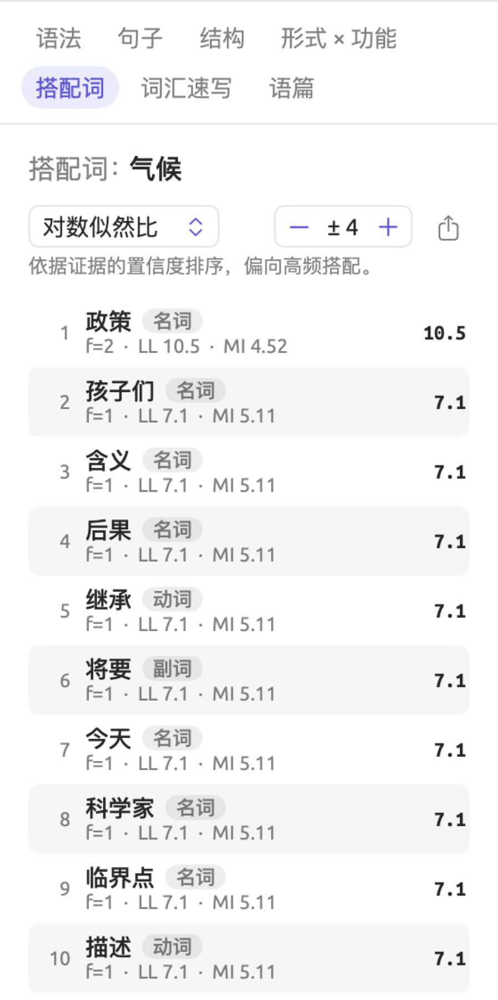
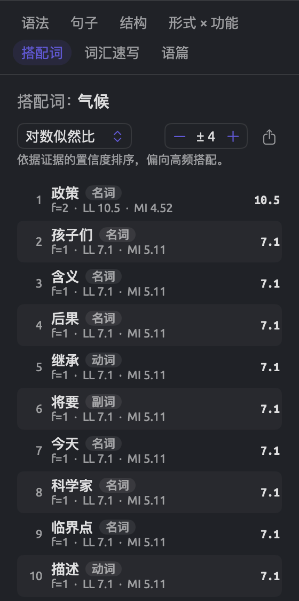
要列出一个词的搭配词：
- 在阅读器中选中节点词。
- 点按搭配词。标题中是词元，如搭配词：气候，因为这个词的所有形式都计算在内（英语中 climate 和 climates 都算；对 cost 这样的词，动词和名词也都算）。
- 从左上角的菜单中选择一种度量。菜单最初显示对数似然比，其他度量有 MI、t 值和 logDice（见本章后文的关联度量）。控件下方有一行文字，说明所选度量偏向哪一类搭配词。
- 用右侧的步进器设置窗口的大小。它最初显示 ± 4，范围是 ± 1 到 ± 10（见下文的怎样才算附近）。
列表按所选度量从高到低列出找到的每个搭配词。每一行包括：
- 排名；
- 搭配词，后面是它的词类；
- 一行类似 f=8 · LL 36.8 · MI 4.32 的文字，其中 f 是搭配词在节点词附近出现的频次，LL 表示对数似然比，MI 表示互信息；
- 右侧是所选度量的实际值。
搭配词与节点词一样按词元计数。每个搭配词以它在文档中第一次出现时的写法列出，并带有它在那里的词类。
点按任何一行，即可选中这个搭配词在文档中第一次出现的位置。分面跟随选择，随后会显示你点按的那个词的搭配词；再次选中“气候”即可回来。
你选择其他内容时，分面保留当前的度量和窗口设置。但切换分面或文档后，两者会分别恢复为对数似然比和 ± 4。如果没有适合作搭配词的词，分面显示在 ± 4 范围内未找到实义搭配词。
步进器右边的导出按钮把当前的搭配词导出为 CSV 文件，文件以节点词命名，如 collocates-气候。各行的顺序与列表的排序相同。列有排名、搭配词、词类（以代码表示，如 NOUN）、频次（即 f）、期望值、对数似然比、MI、MI3、t 值、z 值、Dice 和 logDice。
怎样才算附近
对节点词的每一次出现，LemmaLoom 都会查看它前后在同一句子之内、不超过窗口大小的各个位置。设为 ± 4 时，就是节点词之前的四个词符和之后的四个词符。每个词符占一个位置，不论它是标点符号还是停用词。停用词是非常常见的词，如中文的“的”“了”“和”“我们”，英语的 the、and，每种语言都有自己的停用词表。标点符号、停用词以及窗口中再次出现的节点词都不算作搭配词。
以“有些读者可能会担心，气候政策最终会最沉重地压在本已艰难的家庭身上。”为例，节点词是“气候”，窗口为 ± 4。节点词前面的四个位置是“可能”“会”“担心”和逗号，后面的四个位置是“政策”“最终”“会”和“最”。逗号是标点符号，两个“会”和“最”是停用词，所以这个窗口计入四个词，即“可能”“担心”“政策”和“最终”。
如果节点词的两次出现靠得很近，它们之间的词会同时落在两个窗口中，因此被计数两次。
查询中的搭配词模板计数方式不同。在那里，只有词占位置，停用词以及窗口中再次出现的节点词都会算作搭配词；此外，窗口的初始大小是 5 而不是 4。因此，同一个词在两处得到的列表可能大不相同。
关联度量
分面中的度量，都是把搭配词在节点词附近出现的次数，与它纯属偶然时应出现的次数相比较。各种度量的不同之处，在于怎样权衡这个差距的大小与计算差距所依据的观察总数，因此每种度量偏向不同类型的搭配成分。
设想一篇虚构的 5,000 词杂志专题文章，写的是夏天的一场热浪，其中“气候”出现 20 次。下面计算中的数字纯属虚构，只为便于计算；示例项目中的文档要短得多。设为 ± 4 时，所有窗口一共计入 100 个词。假设“危机”在文档中出现 20 次，其中 8 次落在节点词“气候”周围的窗口中。这样就得到以下四个数：
- ，“危机”在窗口中出现的次数（即这一行的 f）；
- ，所有窗口中计入的词的总数；
- ，“危机”在文档中出现的总次数；
- ，文档中计入的词的总数，不含标点符号和停用词。
期望频次
如果“危机”在文章中随机出现，窗口就应该分到“危机”出现次数中相应的一份。窗口包含 5,000 个词中的 100 个，所以应包含“危机”20 次出现中的 0.4 次，这就是下式给出的期望频次：
期望频次不一定是整数，因为它只是一个平均值。也就是说，平均来看，“危机”在窗口中预期出现不到一次，而实际出现了 8 次。下面的所有统计度量，衡量的都是 8 次与预期的 0.4 次相差多远。导出文件在期望值列中列出 。
互信息
互信息在菜单中显示为 MI，它表示搭配词在节点词附近出现的次数比期望多多少，以翻倍的次数来衡量：
以 2 为底的对数记作 ，它衡量的是翻倍的次数，所以 ，因为 2 × 2 × 2 = 8。同样，；大于 1 的数对数为正，0 和 1 之间的数对数为负。如果你的计算器没有 ，可以用这个数的对数除以 2 的对数，即 。
对“危机”来说，，即它在“气候”附近出现的次数是偶然预期的二十倍。20 介于 16（翻倍四次）和 32（翻倍五次）之间，。MI 为 0 表示出现次数与期望相同，每增加 1 表示频率再翻一倍。
MI 的计分方式不利于非专一的搭配，因而偏向罕见的词。假设“中和”在文章中出现两次，而且只出现在“气候”旁边。那么它的期望频次是 ，互信息得分为 ，超过“危机”。除了在重叠窗口中被计数两次的词，没有哪个词的得分能比这更高。一个只与“气候”一起出现的词有 ，所以不论它出现 1 次还是 20 次，都得到 。
t 值
t 值等于观察频次与期望频次之差除以观察频次的平方根。公式如下：
对“危机”来说，。分母中的平方根比分子中的计数增长得慢，所以一对词被观察到的次数越多，它的 t 值就可能越高。因此，t 值往往偏向经常一起出现的常见词对。在语料库语言学中，t 值超过 2 通常被看作这对词并非偶然相遇的迹象。对“中和”来说，，没有超过 2，尽管它的两次出现都在“气候”附近。
logDice
Dice 系数把两个词相遇的次数（）与窗口中的词数加上搭配词的出现次数（）相比较：
Dice 介于 0 和 1 之间。Dice 为 1 表示窗口中的所有词都是这个搭配词，并且这个搭配词的每次出现都落在窗口中。logDice 的取值上限为 14，每低 1 分，相当于 Dice 比值除以 2。
例如搭配词是“危机”时，；它以 2 为底的对数约为 −2.91，所以 logDice 得分为 。
logDice 不考虑文档的总长度（），所以不论文本长短，logDice 得分的变化往往很小。不过 logDice 确实取决于窗口中的词数（）。
对数似然比
对数似然比是列表最初使用的度量。它的基本含义是：有多强的证据表明，搭配词在节点词周围的计数不只是巧合。它考察“是不是‘危机’”与“在窗口中还是在别处”的所有组合。每个词都恰好落在下面四个单元格中的一个：
| “危机” | 其他词 | 合计 | |
|---|---|---|---|
| 在窗口中 | 8 | 92 | 100 |
| 在别处 | 12 | 4,888 | 4,900 |
| 合计 | 20 | 4,980 | 5,000 |
92 是 ，即窗口中其他词的出现次数。12 是 ，即“危机”在别处的出现次数。4,888 是 ，即其余所有的词。每个单元格都有一个期望频次，算法和前面一样，用行合计乘以列合计，再除以总计。由此得到的期望频次依次是 0.4（“危机”在窗口中，，即前面的 ）、99.6、19.6 和 4,880.4。
得分计算的是每个单元格的实际计数与期望相差多远：
其中 是每个单元格的观察频次， 是它的期望频次，（希腊字母 sigma 的大写）表示“对四个单元格求和”。 表示自然对数函数，对应计算器上的 ln 键。与 一样，它在自变量为 1 时返回 0，大于 1 时为正，否则为负。因此，如果一个单元格的观察频次与期望完全相同，总和中不增加任何数值；如果更大，就增加一个正数；如果更小，就增加一个负数。正数总是会超过负数，所以得分不会是负数。这个得分记作 ，其中的 2 并不表示求平方。
对“危机”来说，四个部分是：
乘以 2 后约为 36.8，就是“危机”这一行中的值。由于乘以系数 2 并使用自然对数，这个得分与自由度为 1 的卡方分布表处在同一刻度上；对 2 × 2 列联表做卡方检验时，通常查的就是这张表。
按照这张表，如果两个词互不相关，纯属偶然得到 3.84 或更高得分的概率只有 5%；6.63 对应 1%，10.83 对应 0.1%，即千分之一。这个百分比称为 p 值，它反映的是：如果两个词毫无关系，得到这样的得分会有多出人意料。但请注意，p 值并不说明两个词之间的关系是否真实存在；它说明的是，在假定两者独立的前提下，某一观察结果有多出人意料。在这个例子中，“危机”的得分为 36.8，远远超过上述三个数值。
由于列表对每个候选词都做检验，在 100 个完全无关的词中，平均约有 5 个会纯属偶然达到 3.84。另外请注意，卡方分布表中的数值假定期望频次不太小。
得分并不说明计数朝哪个方向偏离。如果“高温”在文章中出现 200 次，却只有一次在“气候”附近，它的期望频次是 ，对数似然比为 3.4，MI 为 。行中的 MI 为负，说明这个词出现在节点词附近的次数比偶然预期的少。
对数似然比偏向差距大、频次高的计数，这也是它作为默认度量的原因。例如，“中和”的出现次数是期望的 50 倍，但只出现两次，它的对数似然比为 15.7。再看另一个词：如果“人们”在这篇 5,000 词的文章中出现 100 次，其中只有 6 次在“气候”附近，它的期望频次是 2，所以实际出现次数是期望的 3 倍。六次出现、三倍于期望，作为证据不如两次出现、五十倍于期望有力，所以对数似然比只有 5.5。
比较各项度量
按不同的度量为这三个词排名，结果各不相同：
| 搭配词 | 对数似然比 | MI | t 值 | logDice | |||
|---|---|---|---|---|---|---|---|
| “危机” | 8 | 20 | 0.4 | 36.8 | 4.32 | 2.7 | 11.09 |
| “中和” | 2 | 2 | 0.04 | 15.7 | 5.64 | 1.4 | 9.33 |
| “人们” | 6 | 100 | 2 | 5.5 | 1.58 | 1.6 | 9.94 |
对数似然比把“危机”排在第一，“中和”排在第二，因为在期望频次只有 0.04 的情况下，即使只出现两次也不太可能是偶然。由于“中和”的两次出现都靠近“气候”，MI 把它排在第一。t 值则对这么少的出现次数有所保留，它把“人们”排在“中和”前面，因为六次出现比两次更可靠。在这一点上，logDice 与 t 值一致。
一般来说，先从对数似然比开始。如果需要可以在文档之间比较的度量，使用 logDice；如果想找某个词出现频次最高的搭配成分，使用 t 值。MI 则用于寻找专一的搭配，使用时请检查这些词的 f 值。
CSV 导出文件还提供另外三种度量。MI3 等于 ，三次方使常见的共现比在 MI 中得到更大的权重（“危机”为 10.32）。z 值按 计算，罕见词的分母变得极小，所以会得到极端的数值（“危机”为 12.02）。最后，Dice 是未取对数的系数（“危机”为 0.133）。帮助 ▸ 术语表在关联度量下定义了每一种度量，第 27 章“统计量一览”中的词语关联得分把它们放在一起对照。
语篇分面
语篇是以整个文档为对象的分面，用于考察文本本身的结构和风格。这个分面分为三个部分，用顶部的按钮选择：
- 衔接显示一个句子与前面各句之间的联系。
- 元话语列出说话人用来评说自己所说内容、与听者交流的词语。
- 修辞包括各种文体选择，如被动句、名词化和前置开头（放在主语之前的短语）。名词化是把动作变成名词，例如由 decide 派生出的 decision。
每个部分中的类别，都由同名的透镜在文本中标注。第 6 章“透镜”中的衔接及其后两节详细说明了每种标注方法。
这些发现来自索引时运行的同名内置分析器。分析结果加载期间，分面显示一个旋转的进度指示器。如果分析器没有对这个文档运行（例如因为它的输出已在文档信息中移除），分面会根据分析器显示暂无衔接数据、暂无元话语或暂无修辞手法（见第 21 章“分析与索引”）。文档中根本没有这类内容时，也会显示这些提示。
如果放不下这些部分按钮，它们会换成一个菜单，其中列出各个部分。你查看的每个文档都会分别记住你的选择。
类别列表
三个部分的布局一致。部分按钮正下方是搜索栏，再往下，每个有发现的类别各占一行，显示类别的颜色、名称和其中的发现数。各类别最初都是收起的。
要查看某个类别中的发现：
- 点按它所在的行，将其展开。在元话语和修辞中，最先显示的是一行描述这个类别的文字。
- 点按一条发现，即可在阅读器中选中它所在的句子。
- 要在文本中看到这个类别的标注，请点按在正文中高亮（见下文的在正文中高亮某个类别）。
每个类别显示前 200 条发现，后面有一行文字，如还有 38 项。离开这个部分后，展开的类别会重新收起。
衔接
衔接根据每个句子的主位（句子开头的部分）为句子分类。英语中，主位是主要动词的主语连同属于它的所有词；德语中，主位是动词之前的所有内容（动词前没有内容时取主语）；中文中，主位是话题，分析找不到话题时取主语（见第 6 章“透镜”中的衔接）。如果主位中含有第三人称代词或所有格（如“他们”“他们的”）或指示词（如“这”），或者重复了前两句中任一句的词，这个句子就是已衔接的。否则，这个句子引出了一个新话题。
类别上方的两个计数分别给出已衔接句子和新话题的总数。“碳税之争”的这两个数是 11 已衔接和 16 新话题。文档的第一个句子归在开头下，算作已衔接。
各类别按以下顺序排列，每个类别下列出属于它的句子。每个句子下面有一行文字，说明它为什么归入这个类别：
| 类别 | 句子下方的文字 |
|---|---|
| 开头 | 开启该段落 |
| 代词衔接 | 已知：代词 “他们”，引号中是那个代词 |
| 领属衔接 | 已知：所有格 “Their”（英语文档中的例子） |
| 指示衔接 | 已知：“这” 回指 |
| 重复词语 | 已知：重复 “气候”，引号中是重复的词 |
| 零形回指 | 已知：省略的主语延续话题（仅限中文） |
| 新话题 | 主语中出现新话题；可能存在衔接缺口 |
新话题下列出的句子应该依次读一遍。在“碳税之争”中，新话题扎堆的地方可能说明文本在那里出现了跳跃，读者得在没有任何引导的情况下自己跨过这些缺口。
不过要注意，在这里，没有可供检验的主位的句子（英语中没有主语，德语中既没有主语，限定动词前也没有任何内容）也算作新话题，如英语的 Around five times.；这类句子在转写稿中很常见。处理中文文本时，如果一个句子省略的主语延续了前面的话题，它可能算作零形回指而不是新话题。修辞中的衔接检查类别不包括它们，只列出含有主语且至少有六个词的新话题。
元话语
元话语把发现分为模糊限制语（“可能”）、增强语（“显然”）、态度标记（“可惜”）、连接语（“然而”）和介入（“你”“我们”）。德语文本的元话语另有情态小品词（ja、doch），中文文本另有语气助词（“吗”“吧”）。每条发现都列出加了引号的词及其所在的句子。
比较一个文档中的各个元话语类别，可以大致了解作者对话题的立场。如果一位专栏作者用了很多模糊限制语（“可能”“也许”“大概”），而很少用增强语（“显然”“肯定”），文章可能会显得犹豫不决。在政治演讲和评论专栏中，介入往往是最大的元话语类别，因为它既包括“我们”，也包括“你”。
LemmaLoom 内置了用于统计元话语的词表。不过，如果你想用自己的词表来统计模糊限制语，例如示例项目中的“模糊限制语”词典，请参阅第 19 章“词典”。与默认词表不同，“模糊限制语”词典还包括“我觉得”（在“缓和语”下）。这个分面给出的计数只属于所选的文档。不经标准化就比较长度不同的文档的计数，可能会产生误导。例如，一篇 600 词的专栏文章中有 6 个模糊限制语，就相当于 6 ÷ 600 × 1,000 = 每千词 10 个（见第 16 章“查询结果与统计”中的度量）。
修辞
修辞为修辞透镜十三种手法中在文档里出现的每一种设一个类别，如被动语态、名词化、力量词和关联词对（见第 6 章“透镜”中的修辞）。独立结构只在英语中查找，圆周句（主要动词被推迟出现的句子）在英语和德语中查找。
每条发现列出找到的所有词，并附有一条说明，解释为什么把这些词认定为这种手法的实例。例如，没有施事的被动句会得到说明 无施事被动句；施事者完全未被提及。 如果施事保留在 by 短语中，说明也会反映这一点。对于英语中的圆周句，说明会给出句子的主要动词及其在句中的位置。说明以界面语言显示。查询和自定义分析器得到的说明是英文的。
透镜在每个词上只标注一种手法，而分面会列出每一条发现，不管是否重复。因此，同样的词可能在分面中出现在两种不同的手法之下。
要研究施事问题，就应该读被动语态这个类别。“2024 热浪报告”中有“63个市镇的灌溉被限制”和“探视独居老人的责任没有被明确分配”。这两处都没有说明究竟是谁限制了灌溉，又是谁没有分配这项任务。你的文档中类似的模式，会显示作者在哪里略去了动作的执行者。
搜索列表
使用搜索栏，可以按你输入的内容筛选列表。名称中含有输入内容的类别会完整显示。其他类别只显示文本或说明中含有输入内容的发现，并相应更新旁边的数量。匹配时不区分大小写。所有匹配的类别都会展开，并在搜索期间保持展开。如果没有任何匹配，列表显示无匹配项。在衔接中，搜索期间暂时不显示已衔接句子和新话题的计数。
例如，搜索 模糊 会返回元话语中模糊限制语类别的全部内容。搜索 可能，则在每个类别中只返回词或句子中含有“可能”的发现。
在正文中高亮某个类别
在展开的类别中，在正文中高亮会在阅读器中显示这个类别：
- 如果对应的透镜当前处于停用状态，它会启用这个透镜，并且只启用这个类别。
- 如果透镜当前已启用，它会把透镜的范围限定为只有这个类别。
- 如果透镜当前只启用了这个类别，它会重新启用所有类别。
透镜的图例会显示它的哪些图例项已停用（见第 6 章“透镜”中的选择启用哪些标注项）。要连续阅读标注过的句子，还可以同时折叠文档，所用按钮的悬停提示为仅显示透镜标注的句子（见第 6 章“透镜”中的只显示有标注的句子）。
导出发现
部分按钮最右端有一个导出按钮，可以把当前部分存储为 CSV 文件。这个文件包含该部分所有类别的所有发现，不受你的搜索内容和 200 条上限的影响。建议的文件名是文档名称后面加上部分名称，如 2024 热浪报告-修辞。
这个 CSV 文件有四列：类别、句子（句子在文档中的编号）、文本和详情。后两列的内容取决于部分：
| 部分 | 文本 | 详情 |
|---|---|---|
| 衔接 | 句子 | 句子下方的那行文字，如已知：重复 “气候” |
| 元话语 | 找到的词 | 句子 |
| 修辞 | 找到的词 | 说明 |